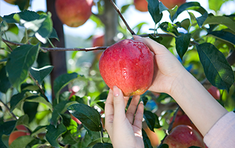
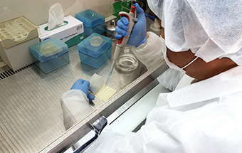
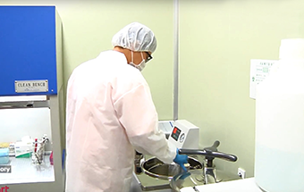
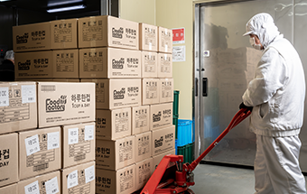
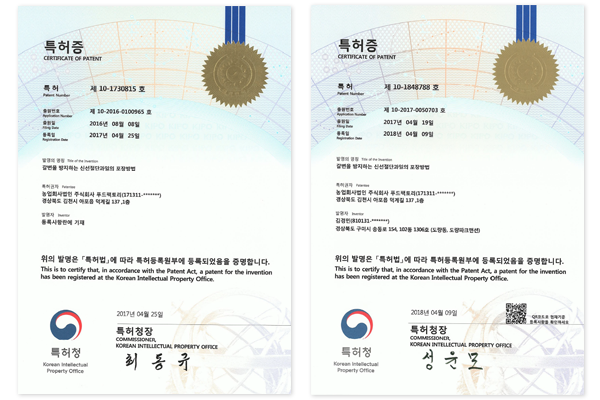
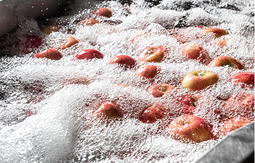
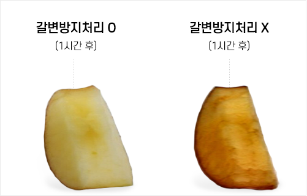
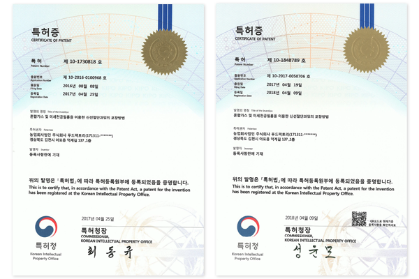

회사소개
인사말
연혁
CI소개
인증서
주요거래처
오시는길
제조공정
원물관리
제조관리
제품소개
소용량 컵과일
중용량 컵과일
대용량 컵과일
과일요거 컵과일
고객지원
공지사항
언론보도
고개문의
초등돌봄사업
교육자료
게시판
주문ERP
How! 컵과일
How! 컵과일
제품문의하기
비주얼영역
제조공정
원물관리
제조관리
컨텐츠영역
원물관리
"우수하고 안전한"
원물 관리 프로세스

01
농가관리
원물가격안정화
농가와 계약재배를 실시하여 영농에서
수확까지 관리를 통해 제조에 알맞은 원물
재배

02
잔류농약관리
안전성 확보
재배 시 농약 사용량 조절 및 잔류농약을
검사하고 토양의 상태를 분석하여
중금속 및 영양소를 진단

03
선별(중량,당도)
품질균일화
비파괴 선별기를 통해 중량, 당도,
부패 정도에 따라 선별하여 안정적인
원물 품질 균일화

04
저온보관관리
보관 유지성 확보
저온 저장 시 최적의 환경으로
보관하여 원물을 최상의 상태로 보관
유지관리
년 1~2회 거래 APC센터 방문하여
평가 실시
원물관리 핵심경쟁력1
신선도 유지를 위한 원물 가공처리기술
절단된 원물의 신선도 유지와 갈변방지를 위한 신선유지제 자체 개발.
경쟁사 대비 높은 신선도유지 능력 및 경제성 확보

갈변을 방지하는 신선절단과일의 포장방법

가공공정
특수 공정 저온수에 10분 내 침지
1일 4번 침지수 교체(경쟁사: 1회/3~4일)
각 원물들의 공정 Data 축적하여 최적값 도출

가공효과
과일의 갈변 방지
무름 현상 등을 억제하여 신선도 유지
미생물 증식을 억제하기 위한 살균 효과
선 방지제 자체 개발로 인한 공정 비용 절감
원물관리 핵심경쟁력2
MAP포장기술
부패와 변질을 막아주는 MAP포장기술 개발 · 경쟁사 대비 3~6일 긴 유통기한 확보

혼합가스 및 미세천공필름을 이용한 신선절단과일의 포장법